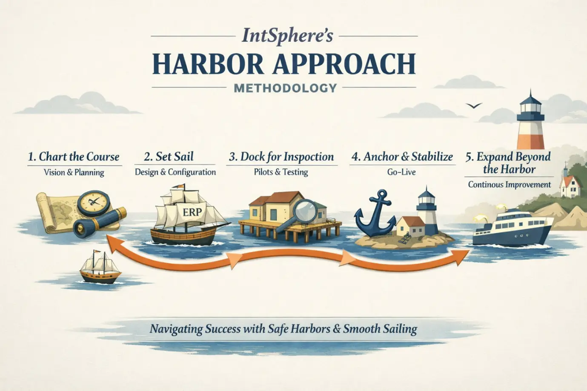

Unlike traditional waterfall or purely agile ERP methodologies, IntSphere's Harbor Approach blends structure with adaptability. It ensures organisations don't rush into go-live without stabilising each stage — while still allowing iterative improvements at every checkpoint.
Each phase is a harbor checkpoint — a deliberate pause to validate, stabilise, and prepare before the next leg of the journey.
The Harbor Approach is both structured and narrative-driven: it provides the rigour of phased ERP implementation while engaging stakeholders with a metaphor that keeps everyone aligned on the journey.
The Harbor metaphor isn't just storytelling — each element maps to a proven implementation principle that reduces risk and drives adoption.
The harbor metaphor makes complex ERP phases easy to grasp — for executives, project teams, and end users alike. Everyone understands the journey.
Each harbor checkpoint ensures safe transitions and minimises risk. No phase begins before the previous one is fully validated and stabilised.
Training and change management are embedded throughout the voyage — not bolted on at the end. User adoption is treated as a first-class deliverable.
Continuous improvement prepares the enterprise for new horizons — AI, automation, and scale — without disrupting the stable core.
Executive oversight is built into every phase, keeping the project aligned with business goals and enabling rapid course corrections when needed.
Rigorous phase gates prevent premature go-live, while iterative pilots and playbacks allow continuous refinement — the best of both worlds.
The Harbor Approach is not a rebrand of existing methodologies — it synthesises the best elements of both while addressing their key weaknesses in ERP contexts.
Talk to our team about applying the Harbor Approach to your Oracle ERP implementation.